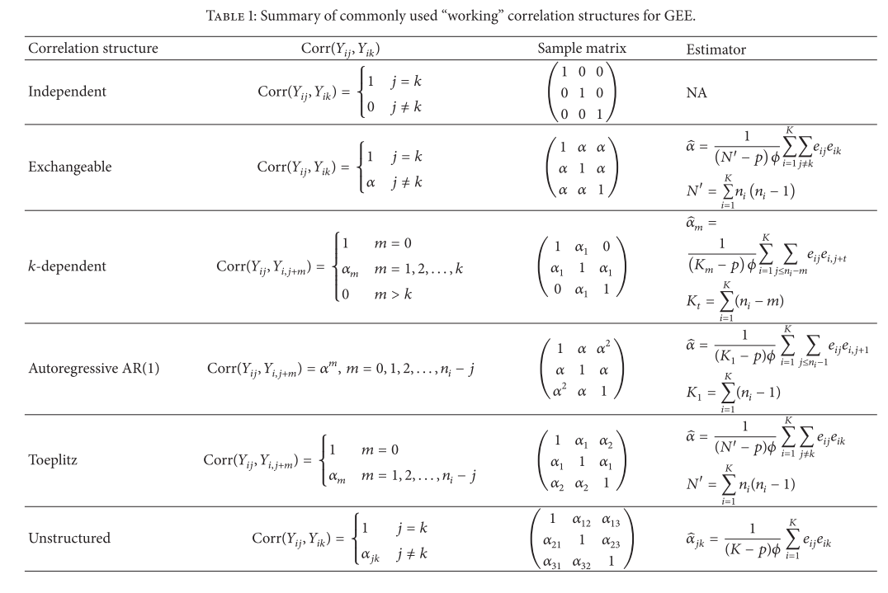

geepack
(Halekoh, Højsgaard, and Yan 2006)
library(tidyverse)## Warning: package 'tidyverse' was built under R version 3.6.3## Warning: package 'tibble' was built under R version 3.6.3## Warning: package 'purrr' was built under R version 3.6.3## Warning: package 'forcats' was built under R version 3.6.3library(gt)## Warning: package 'gt' was built under R version 3.6.3library(here)
library(geepack)## Warning: package 'geepack' was built under R version 3.6.3library(corrr)## Warning: package 'corrr' was built under R version 3.6.3# Set ggplot2 theme and defaults
theme_set(cowplot::theme_cowplot() + cowplot::background_grid(major = "xy"))
ggp <- function(...) ggplot(...) +
scale_color_brewer(palette = "Set1") +
scale_fill_brewer(palette = "Set1")2. An example data set
The respiratory data set:
data(respiratory)
glimpse(respiratory)## Rows: 444
## Columns: 8
## $ center <int> 1, 1, 1, 1, 1, 1, 1, 1, 1, 1, 1, 1, 1, 1, 1, 1, 1, 1, 1, 1...
## $ id <int> 1, 1, 1, 1, 2, 2, 2, 2, 3, 3, 3, 3, 4, 4, 4, 4, 5, 5, 5, 5...
## $ treat <fct> P, P, P, P, P, P, P, P, A, A, A, A, P, P, P, P, P, P, P, P...
## $ sex <fct> M, M, M, M, M, M, M, M, M, M, M, M, M, M, M, M, F, F, F, F...
## $ age <int> 46, 46, 46, 46, 28, 28, 28, 28, 23, 23, 23, 23, 44, 44, 44...
## $ baseline <int> 0, 0, 0, 0, 0, 0, 0, 0, 1, 1, 1, 1, 1, 1, 1, 1, 1, 1, 1, 1...
## $ visit <int> 1, 2, 3, 4, 1, 2, 3, 4, 1, 2, 3, 4, 1, 2, 3, 4, 1, 2, 3, 4...
## $ outcome <int> 0, 0, 0, 0, 0, 0, 0, 0, 1, 1, 1, 1, 1, 1, 1, 0, 1, 1, 1, 1...comes from a clinical study of a treatment on patients with respiratory illness.
A total of 111 patients (id) from 2 clinical centers (center).
(Note that the id variable is not unique: they are numbered starting from 1 for each center.)
Patients were randomized to receive either
placebo (treat = “P”, 51%) or
active treatment (treat = “A”, 49%).
At 4 examination visits, the respiratory state of each patient was classified as good (outcome = 1) or poor (outcome = 0).
Respiratory state at baseline (same coding as outcome) is recorded in the baseline variable.
Re-create Table 1:
respiratory %>%
#select(-sex, -age) %>%
pivot_wider(names_from = visit, values_from = outcome) %>%
transmute(
center, id, baseline, treat,
response_pattern = glue::glue("{`1`}\n\n{`2`}\n\n{`3`}\n\n{`4`}")
) %>%
group_by(baseline, treat, response_pattern) %>%
tally() %>%
pivot_wider(names_from = response_pattern, values_from = n,
values_fill = list(n = 0)) %>%
ungroup() %>%
gt()| baseline | treat | 0 0 0 0 | 0 0 0 1 | 0 0 1 0 | 0 1 0 0 | 0 1 1 0 | 0 1 1 1 | 1 0 0 0 | 1 0 1 0 | 1 1 0 1 | 1 1 1 0 | 1 1 1 1 | 1 0 1 1 | 1 1 0 0 | 1 0 0 1 | 0 0 1 1 |
|---|---|---|---|---|---|---|---|---|---|---|---|---|---|---|---|---|
| 0 | A | 7 | 1 | 2 | 2 | 1 | 4 | 2 | 1 | 2 | 1 | 7 | 0 | 0 | 0 | 0 |
| 0 | P | 18 | 1 | 2 | 0 | 1 | 0 | 1 | 0 | 1 | 0 | 3 | 2 | 2 | 0 | 0 |
| 1 | A | 0 | 0 | 0 | 0 | 0 | 0 | 0 | 1 | 0 | 4 | 17 | 1 | 0 | 1 | 0 |
| 1 | P | 1 | 0 | 0 | 1 | 1 | 1 | 4 | 0 | 1 | 1 | 10 | 2 | 0 | 1 | 3 |
In terms of patient characteristics, we have age in years and sex.
Re-create Table 2:
respiratory %>%
group_by(across(c(-visit, -outcome))) %>%
summarise(n_good = sum(outcome)) %>%
group_by(sex, n_good) %>%
tally() %>%
pivot_wider(names_from = n_good, values_from = n) %>%
mutate(variable = "Sex", sex = as.character(sex)) %>%
rename(value = sex) %>%
bind_rows(
respiratory %>%
group_by(across(c(-visit, -outcome))) %>%
summarise(n_good = sum(outcome)) %>%
group_by(center, n_good) %>%
tally() %>%
pivot_wider(names_from = n_good, values_from = n) %>%
mutate(variable = "Center", center = as.character(center)) %>%
rename(value = center)
) %>%
# From some reason, the column name "0" doesn't work with gt
rename(" 0" = `0`) %>%
group_by(variable) %>%
gt()| value | 0 | 1 | 2 | 3 | 4 |
|---|---|---|---|---|---|
| Sex | |||||
| F | 7 | 3 | 3 | 3 | 7 |
| M | 19 | 13 | 9 | 17 | 30 |
| Center | |||||
| 1 | 18 | 9 | 6 | 11 | 12 |
| 2 | 8 | 7 | 6 | 9 | 25 |
Figure 1 displays the relationship between age and the proportion of positive responses (outcome = 1) per patient:
respiratory %>%
group_by(center, id, age) %>%
summarise(prop = mean(outcome)) %>%
ggp(aes(x = age, y = prop)) +
geom_point(size = 3) +
geom_smooth(method = "loess") +
labs(x = "Age", y = "Proportion of positive responses") +
coord_cartesian(ylim = c(0, 1))
Fit a logistic model with a quadratic age term:
glm_outcome <-
glm(
outcome ~ baseline + center + sex + treat + age + I(age^2),
data = respiratory, family = binomial
)
summary(glm_outcome)##
## Call:
## glm(formula = outcome ~ baseline + center + sex + treat + age +
## I(age^2), family = binomial, data = respiratory)
##
## Deviance Residuals:
## Min 1Q Median 3Q Max
## -2.5951 -0.9108 0.4034 0.8336 2.0951
##
## Coefficients:
## Estimate Std. Error z value Pr(>|z|)
## (Intercept) 3.3579727 1.0285292 3.265 0.0011 **
## baseline 1.8850421 0.2482959 7.592 3.15e-14 ***
## center 0.5099244 0.2453982 2.078 0.0377 *
## sexM -0.4510595 0.3166570 -1.424 0.1543
## treatP -1.3231587 0.2431603 -5.442 5.28e-08 ***
## age -0.2072815 0.0472538 -4.387 1.15e-05 ***
## I(age^2) 0.0025650 0.0006324 4.056 4.99e-05 ***
## ---
## Signif. codes: 0 '***' 0.001 '**' 0.01 '*' 0.05 '.' 0.1 ' ' 1
##
## (Dispersion parameter for binomial family taken to be 1)
##
## Null deviance: 609.41 on 443 degrees of freedom
## Residual deviance: 468.62 on 437 degrees of freedom
## AIC: 482.62
##
## Number of Fisher Scoring iterations: 4This simple model excludes any clustering of measurements, which is inappropriate for longitudinal data. We can show this by computing correlations of the residuals between visits:
broom::augment(
glm_outcome,
data = respiratory,
type.residals = "pearson"
) %>%
select(center, id, visit, .resid) %>%
pivot_wider(names_from = visit, values_from = .resid) %>%
select(-center, -id) %>%
corrr::correlate(method = "pearson", diagonal = 1) %>%
gt() %>%
fmt_number(everything(), decimals = 2)| 1 | 2 | 3 | 4 | |
|---|---|---|---|---|
| 1 | 1.00 | 0.35 | 0.22 | 0.33 |
| 2 | 0.35 | 1.00 | 0.41 | 0.36 |
| 3 | 0.22 | 0.41 | 1.00 | 0.41 |
| 4 | 0.33 | 0.36 | 0.41 | 1.00 |
The numbers here differ slightly from those published – not sure why. The message stays the same, however: there is considerable measurement correlation within subjects, that is not being accounted for in the GLM.
3. Theory of GEE
(Ziegler, Kastner, and Blettner 1998) to supplement this section.
(Liang and Zeger 1986) introduced the GEE method of quasi-likelihood estimation for correlated data.
Consider a sample of \(i = 1, \dots, k\) independent multivariate observations \(y_i = (y_{i1}, \dots, y_{it}, \dots, y_{in_i})\). For example, a trial of \(k\) subjects where a subject \(i\) has a cluster of \(n_i\) longitudinal observations, and each subjects’ observations are independent of eachother..
The expectation at a time point \(t\) is \(E(y_{it}) = \mu_{it}\), and is related to the \(p\)-dimensional vector of covariates (or regressors) \(x_{it}\) by the link function \(g\):
\[ g(\mu_{it}) = x_{it}^{\intercal} \beta \]
where \(\beta\) is the parameter vector of interest.
An important property of the generalized linear model (GLM) is the functional relation between mean and variance:
\[ \text{Var}(y_{it} | x_{it}) = \phi a (\mu_{it}) \]
where \(\phi\) is a common scale parameter (also called dispersion parameter) and \(a(\mu_{it})\) is a known variance function. If a specific exponential family can be assumed, then the variance function is uniquely determined. For example:
- Gaussian distribution: constant, \(a(\mu_{it}) = \sigma^2\)
- Binomial distribution: \(a(\mu_{it}) = \mu_{it} (1 - \mu_{it}) = np (1 - np)\)
- Poisson distribution: identity \(a(\mu_{it}) = \mu_{it}\)
- Gamma distribution: squared \(a(\mu_{it}) = \mu_{it}^2\)
For independent observations, the parameter vector \(\beta\) is estimated using the maximum likelihood (ML) method, where the assumed distribution determines the likelihood equations (or score equations) that are give by derivatives of the log-likelihood function with respect to \(\beta\). The likelihood equations – also called independence estimating equations (IEE) – have the form:
\[ \begin{align} u(\beta) &= \frac{1}{k} \sum_{i=1}^k \frac{\partial \mu_i'}{\partial \beta} V_i^{-1} (y_i - \mu_i) \\ \end{align} \] where \(V_i\) is the covariance matrix of \(y_i\), and \(\partial{\mu_i'}/\partial{\beta}\) is a \(p \times n_i\) matrix of partial derivatives of the mean with respect to the regression parameters of the \(i\)th subject.
These equations are solved iteratively in various ways that are easy to compute (not shown here). The estimator \(\hat{\beta}\) is consistent and asymptotically normally distributed with covariance matrix:
$$ \[\begin{align} \hat{V}(\hat{\beta}) &= k \lim_{k \to \infty} \hat{\Sigma}_0^{-1} \hat{\Sigma}_1 \hat{\Sigma}_0^{-1} \\ &= k \lim_{k \to \infty} (\sum_{i=1}^k \frac{\partial \mu_i^{\intercal}}{\partial \beta} V_i^{-1} \frac{\partial \mu_i}{\partial \beta^{\intercal}}) (\sum_{i=1}^k \frac{\partial \mu_i^{\intercal}}{\partial \beta} V_i^{-1} \text{Cov}(y_i) V_i^{-1} \frac{\partial \mu_i}{\partial \beta^{\intercal}}) (\sum_{i=1}^k \frac{\partial \mu_i^{\intercal}}{\partial \beta} V_i^{-1} \frac{\partial \mu_i}{\partial \beta^{\intercal}}) \end{align}\] $$
where \(\hat{\Sigma}_1 = (y_i \ - \hat{\mu}_i) (y_i - \hat{\mu}_i)'\) is the sandwich estimator of \(\Sigma_1\). However, the main disadvantage of this estimation approach is the inefficiency in the presence of large autocorrelation. Thus, generalized estimating equations were proposed.
Consider a GLM with fixed mean structure and variance. Let \(R (\alpha)\) be a working correlation matrix of \(y_i\) completely described by the parameter vector \(\alpha\) of length \(m\), that is assumed to be identical for all clusters \(i\). Then with the estimate \(R(\hat{\alpha}) = \hat{R}\), the estimator for \(\Sigma_1\) is given by
\[ \hat{\Sigma}_1 = \phi \hat{A}_i^{1/2} R(\hat{\alpha}) \hat{A}_i^{1/2} \]
where \(\hat{A}_i^{1/2}\) is the estimated squared root of the diagonal matrix of the variances \(v_{it}\). With this estimated working correlation matrix \(\hat{R}\), the GEE have the form:
\[ \begin{align} u(\beta) &= \frac{1}{k} \sum_{i=1}^k \frac{\partial \mu_i'}{\partial \beta} \hat{\Sigma}_i^{-1} (y_i - \mu_i) \\ \end{align} \]
GEE gives us the first order moments only (i.e. the mean structure estimated consistently). The term ‘generalized’ can be misleading – the term Estimating Equations (EE) is preferred to GEE by some.
There is then the choice of \(R(\alpha)\), which should be chosen carefully for convergence of \(\hat{\alpha}\) to \(\alpha\). The GEE reduce to IEE if the identify matrix is used as the working correlation, as \(R\) reduces to a diagonal matrix of the variances. (Wang 2014) gives a nice summary of common working correlation structures:

If \(\beta\) is estimated using GEE, then \(\hat{\beta}\) is consistent under suitable regularity conditions, if \(\mu_{it} = E(y_{it} | x_{it})\) is specified correctly.